夏令营&预推免记录
0 保研黑话
以下是一些需要提前了解的保研黑话（直接从别的经验贴copy了一下改了改）：
| 术语 | 解释 |
|---|---|
| rk | rank，排名 |
| title | 院校牌子，比如清北、华五、C9…… |
| bar | 院校入营门槛，一般对应难度 |
| wl | waiting list，候补名单 |
| 强/弱com | 强com是指招生办或者招生审核小组权力很大，导师话语权较弱；反之为弱com，只要导师同意要你就能进，剩下基本就是走个流程 |
| 霸面 | 入营失败但通过联系导师同样获得面试机会，常见于中科院 |
| oq | over qualified，指申请者实力远超院校水平，部分院校筛选时为防止被海会筛oq |
| 绿群 | 全国最大的计算机保研交流群（应该是），可以在该群中获得比较有价值的信息，其中一群：605176069（现在貌似被封了，不知道群友聊什么了），二群：943826679 |
| 保研春晚 | 指在系统上最终确认去向时鸽子满天飞的戏剧性场面，往年是928，今年延后了一天在929 |
1 背景
- 院校：次九 荣誉学院
- 专业：计科 珠峰计划全保研小班
- 成绩排名：12/18（夏令营） 13/18（预推免）
- 英语：CET4：596 / CET6：468
- 奖学金：只有校级奖学金
- 科研：两段科研实习经历，但无论文产出，水了个科创
- 方向：比较倾向于cg（毕竟沙袋特色，接触的相对多一些）和cv（虽卷但有趣），可以接受一些交叉方向，其他不考虑
荣誉学院保外校会有些吃亏，因为课程难度大给分低（比如线代实际按高代来考，在堂考60分的同学降转去普通学院后随便考90多分），排名也只能开小班内部的，有些学校强行卡985前5%，而在我们班就算第一都5%以后了，导致我们在保外时几乎只能去选择弱com的学校。不过荣誉学院的优点是这三年来我从来不用担心自己的保研资格（间接导致我大二摆烂了一整年，绩点猛猛俯冲），心理压力很小，同时也获得了全校最好的师资和科研条件。
2 夏令营
2.1 基本情况
| 学校 | 学院 | 结果 |
|---|---|---|
| 清华 | 计算机 | 未入营（三无选手纯报着玩） |
| 浙大 | 计算机 | 入营&参营（只能给专业学位，遂放弃offer） |
| 复旦 | 类脑 | 入营&参营（直博/学硕任选，最终去向） |
| 南大 | 计算机 | 入营&参营（候补） |
| 上交 | 计算机 | 未入营 |
| 人大 | 信息 | 未入营 |
| 西交 | 软件（错过计院报名了） | 入营，未参加，好像只要是985本都给放进去了？ |
| 南开 | 计算机 | 超弱com，导师考核做到一半放弃了（与期末和复旦营冲突） |
| 中科院 | 计算所 | 导师同意了，但与浙大营冲突+感觉去了也白搭，于是放弃 |
| 中科院 | 自动化所 | 未入营 |
| 中科院 | 空天院 | 入营，未参加 |
| 山大 | 计算机 | 本校，入营无考核（勤工俭学营，懂得都懂） |
可以看出我还是算海投的，当时太焦虑了……其实本来还打算报更多，但被阿轩拦住了，选择做个好人，还是不报那些过了肯定也不会去的（毕竟如果没去成清北华五两所，就不如留本校了，本校有熟悉的导师和熟悉的学长学姐，能拿到的资源也更好一些），当然，报了其他学校人家也不一定给过就是了。
接下来按参营时间顺序说一下各夏令营的具体情况。
2.2 南开
南开计算机是弱com，只要通过导师考核即可获得最终offer。
由于有一些物理背景，我一直对计算机和物理交叉的方向很感兴趣，今年五月底，在一次跟实验室学长的聊天中了解到图形学里的物理模拟方向比较符合我的兴趣，就搜了搜国内做物理模拟的导师，结果发现这是一个很小的圈子，专门做这个的老师不超过五个，最终决定联系南开cmm组的r老师。老师收到邮件后，于六月初对我进行了简单的电话面试，然后布置了一个论文复现的任务（Position Based Fluids）。论文比较好懂，但没想到栽在配环境上了（图形学日常属于是），此时时间也临近期末考试，有好几门课要复习（预习），同时还得知入营复旦了，即意味着考完试后还要去复旦夏令营，所以一直到七月初才有空继续做复现的工作，于是跟rb老师说明了一下情况，老师回复说同意等我忙手头上的事儿再说。
后续：在复旦拿到优营后放弃了南开老师的考核。
2.3 复旦
上面提到的不管班级类型强行卡我校前5%的就是复旦计算机学院，于是报复旦时直接放弃报计算机学院转报类脑了。类脑的老师不全是做脑科学的，还有一些做计算机或者统计学的。虽然bar会比计院低一些，但在往年经验贴中看到说类脑卡985前10%，有些末九rk2都会被卡，所以得知入营时我其实是有些意外的，毕竟我这百分之六十多实在差太多，进群后发现山带在营友学校中也是末流学校，大家基本都华五中九，只能说，看来是荣誉学院救了一手。
夏令营体验怎么说呢，复旦安排的还是很奈斯的，五天四晚（6.26~6.30），吃（复旦食堂不限额饭票）住（学校旁四星级酒店）路费都不用自己掏钱（严谨一些的话，路费只报销单程，所以也需要自己掏一部分），老师们也不着急考核而是先让与学生互相了解（反观……），总之感受到了所谓人文关怀吧，给人印象很好。但由于我要做信息安全导论课程的结课论文，在复旦的几天我基本都是白天参与夏令营活动，晚上跟光一块熬夜跑实验赶论文，导致整个人精神状态极差。
夏令营前几天是各个组的老师介绍课题组的研究内容（期间还提供茶歇，爱了），后续分组进行了考核。我当时英文自我介绍的时候卡壳了（暴露了背稿事实），心态有点小崩，老师们的问题我答倒是都答上来了，但有一个问题回答重点前铺垫的太长被老师评价”抓不住重点“，所以面完出去心态更崩了，感觉已经寄了，可以收拾收拾准备下一家了（复旦夏令营期间得知南大入营了），当晚失眠一整夜，不断在想唉要是没学上了怎么办啊……
戏剧性的是，夏令营最后一天下午，结营仪式上公布考核结果，发现拿优营了，还是直博/学硕任选的A类优营，怎么说呢，大概就是感觉这几天的疲惫一扫而空了哈哈哈（发现自己白emo了一天，也是一种别样的体验……），也不补觉了，直接跟庞爷去周围逛吃的了（在这里要感谢庞爷在夏令营期间的陪伴与鼓励，比如在我面试完心态裂开之时帮我订酒店等，同时，也祝贺庞爷喜提A类优营上岸梦导）。
拿优营后，联系了做ml&cv的s老师（之前就在官网关注他了，因为90后+近几年年引用均过千），导师也同意为我留一个名额（目前也在跟s老师做毕设）。总之很感谢类脑吧，让我在六月底就没有了没学上的焦虑（xs，这样的逻辑前面好像也出现过）。
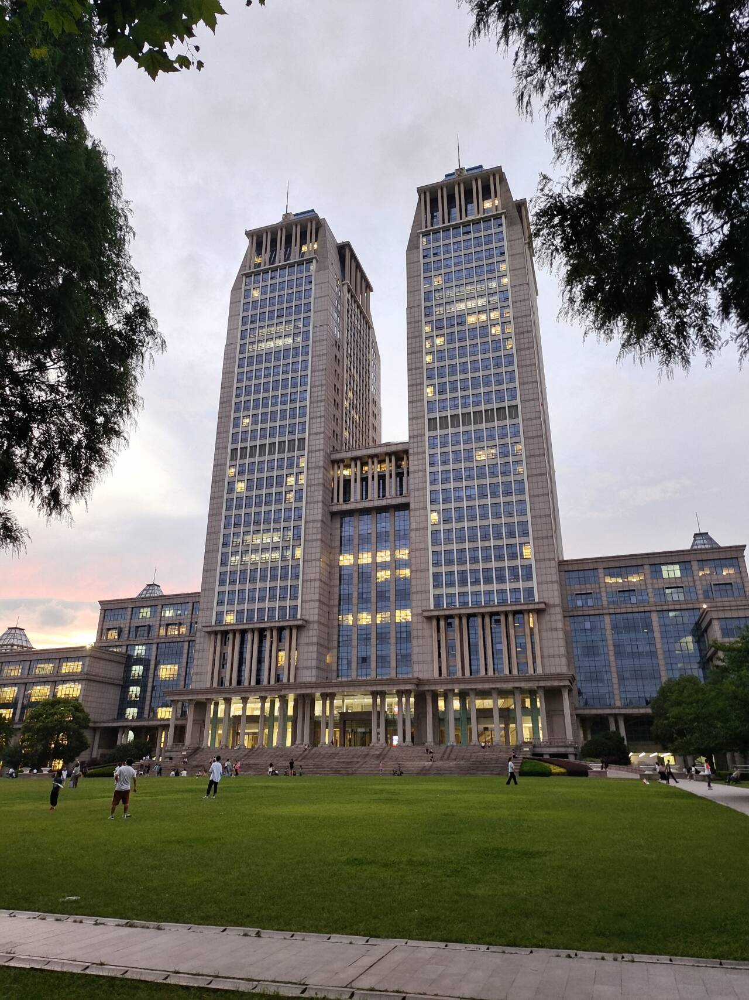
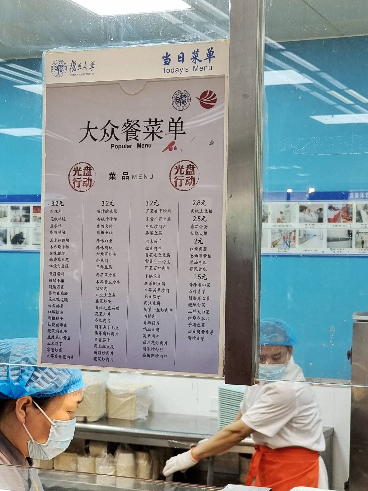
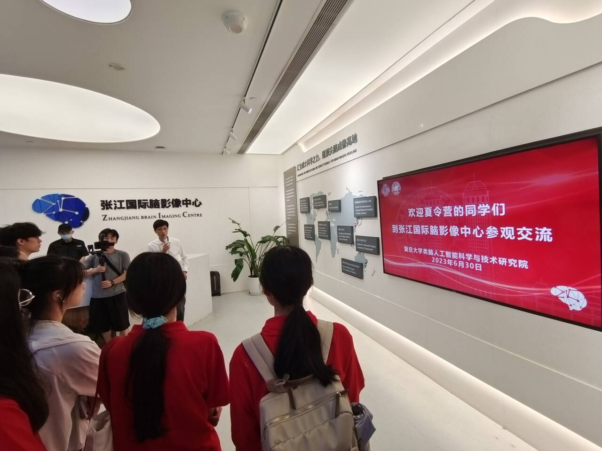
2.4 南大
由于已经拿了复旦的offer，而且这也算是称心的offer，所以从复旦回学校以后直接开摆了（我好像有些过于容易自我满足），连着玩了好几天，一转眼就临近南大夏令营了，赶紧找主播（防止出现歧义：这是我一个舍友的外号）带我补了一波DP相关的题，然后就润去南京了。
到了南京，先跟维狗狗和达儿会合吃了个饭，然后去跟意向导师见了个面聊了聊，聊完就准备考试去了。只能说，不出意外的，凉的很透，自觉已经无望，考完的晚上直接就跟俩哥们玩的了。睡前跟舍友聊了会题目，然后押了一下面试会考的题目（既然我提到这一点，那应该是押到了doge）。
隔天是面试，南大的面试跟体检一样，有三个房间（一个考察408和英文，一个考察算法，还有一个考察科研相关知识和一丢丢心理问题），房间无先后顺序，只需要都完成就可以了。我先排了408&英文房间的队，不得不说，南大这用英文问408属实够变态T_T，实在是不知道一些专业名词用英文怎么说（好吧还是我太菜了）。我被问到了一堆计网相关的知识点，最后答是答出来了，但很凑合就是了。然后我去排了算法房间，出乎我意料的，在算法房间的面试竟然还算顺利，有好几个问题都是昨晚上我跟舍友感觉会考然后复习过了的，比如DAG的一些相关问题。最后去了考察科研相关知识的房间，虽然南大面试是双盲的，但很碰巧这个房间的两个老师我都认识（同学的意向导师），他们做的方向都偏nlp，问的问题也跟这方面相关一些，我大三下学期倒是修过信息检索，但约等于没修（差点挂），所以答的磕磕绊绊，于是老师又问了问相对基础一点的（PCA），这个准备时复习过，相关的问题基本都答上来了。最后老师问我怎么看待特别push的导师，我半摆烂的直话直说了，大概就是如果导师对自身要求也很高很push，那么我肯定是可以理解并接受的，我抗压能力还蛮强，但如果他是摆子还push学生，那我可能会考虑换导师……
总的来说，南大的夏令营体验还不错，住宿安排的南大里面一个会议中心，条件蛮不错的，发了饭票但在南京那几天俩哥们一直请我吃周围好吃的（太感动了俩好大儿）所以没用上当纪念品了哈哈哈。最后的结果也在预想之中，没拿优营，拿了候补（后续补到了，但当时已经跟复旦老师开过会了，就没及时跟南大老师确认，再然后就得知老师已经找别人了）。
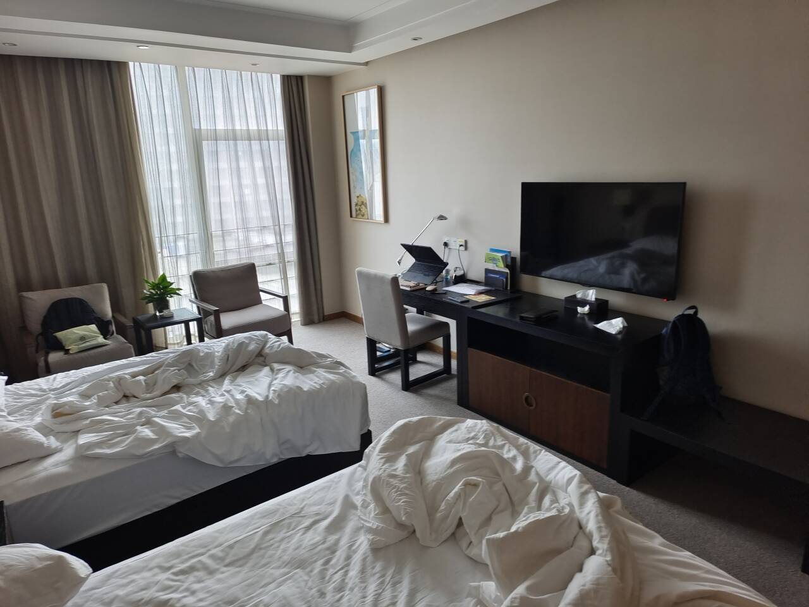
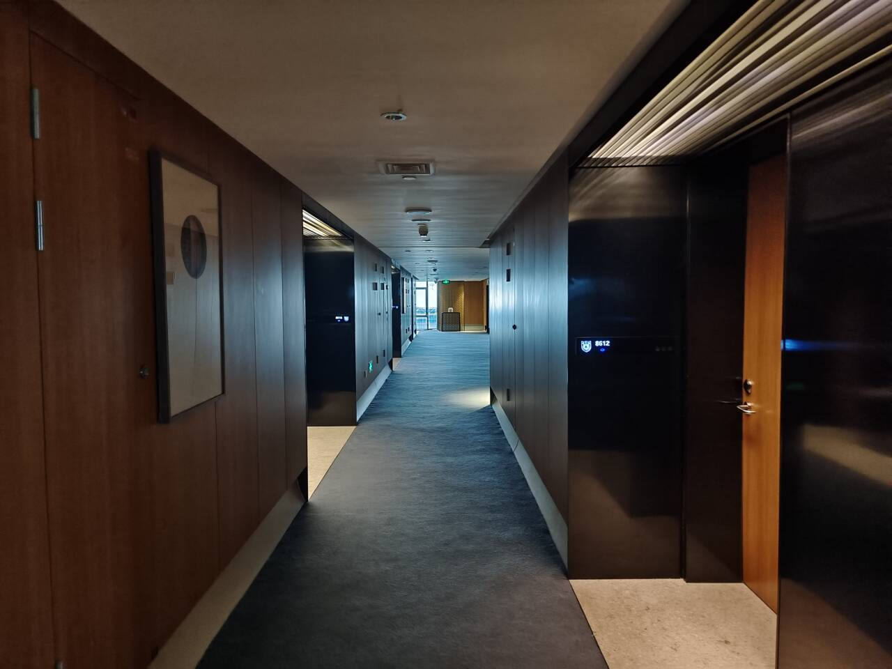
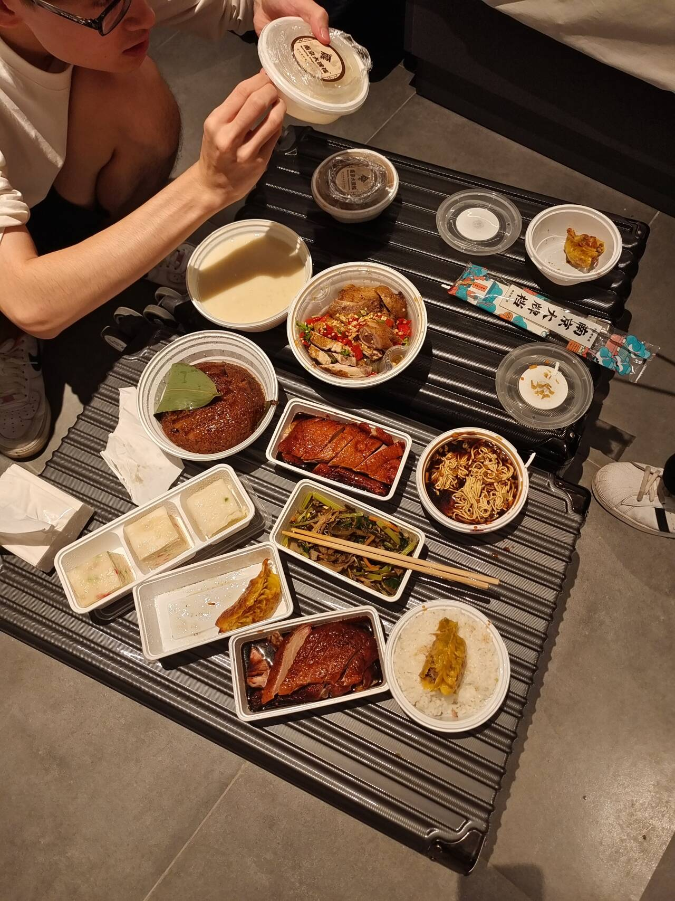
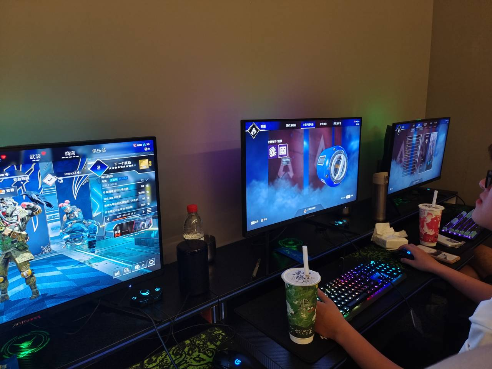
2.5 浙大
浙大图形学很强，title够硬，紫金港校区环境也极佳，而且亦师亦友的路哥也在浙大，所以浙大算是真-梦校了。我在很早的时候就开始看浙大的导师，并列了一个导师清单，从六月初开始依次联系清单上的导师。首先联系的cadcg做slam的c老师，但喜提无任何回复，于是又联系了做人机交互，方向偏设计但有一些图形学交叉内容的w老师（因为有一些美术学习经历，我一直对设计东西蛮感兴趣，跟我合作过课设的同学应该比较清楚这一点，因为我对课设设计的流畅性要求比较高emmm，有时候会因为觉得课设外观太丑而熬个通宵重做一遍），很幸运的收到了回复并约了时间面试，并在后续面试中拿到了口头offer，当时一度十分激动，因为感觉梦校竟然就这样近在咫尺了（但既然我这里用了“一度”，那说明在后来发现这个去向不太如意，因为导师没法给到学术学位，只能给电子信息的专业学位qwq）。
结束南大夏令营后，我赶往了浙大开始暑期实习（浙大计算机学院夏令营采取的暑期实习制，拿offer的流程是：提前联系导师→导师同意接收进入暑期实习→导师推荐优秀暑期实习生进入学院面试→学院面试后决定优营人选）。到了以后先被紫金港校区校园之大吓到了，我从南门下的地铁，拖行李走了足足半小时才走到办住宿的地方（如果去浙大cs的cadcg实验室或者工设相关的实验室实习，不要在紫金港站下车啊！！要乘2号线在虾龙圩站下车）。校园环境也是非常哇塞，我文化沙漠不知道该怎么描述，反正emm就跟公园一样。办好住宿后去了宿舍，怎么说呢，住宿环境确实一般，因为给实习生安排在了相对老旧的白沙楼。在我到之前，三个舍友已经都到了（分别是导师在工设做hci的来自ustc的d，导师在cadcg做vis的来自bupt的j，导师在cadcg做cad的校友l），此时刚好也接近饭点，于是跟舍友奔着外面小吃街就干饭去了。
w老师的实验室在月牙楼，去了以后先被环境震惊了一手——搞设计的环境就是跟计算机那地儿不一样啊，桌椅的形状、布局，木地板与地毯，休息室的书架、沙发、雕塑，阳台讨论间、咖啡厅……总之就是确实充满设计感，相比之下，感觉计算机学院最好的工位环境无非就是桌椅新一点、空间大一点，不过也合理，毕竟设计是人家的专业嘛哈哈哈。跟导师与学长简单见过面以后，便领了任务开始工作了。学长想实现的功能大概要用到mesh parameterization的东西，就找了相关网课（ustc傅老师的）听了听并着手复现一些算法，并结合实际问题做了些微调，不过最终投稿时（CHI 2024）用没用上就不得而知了，因为8月初实习结束我就回家开摆了。
实习期间还有一段小插曲，就是参加了导师所在大组下的年会（正经说法：年度总结汇报大会，大家心里的：团建玩玩玩），去一个竹园度假村待了三天。在年会上汇报了一下实习成果，并带着大家学习了下如何搭建个人网站（其实不难啦，只是有部分同学是纯设计背景的，不怎么了解）。年会最后一天，我找到w老师讨论offer的具体事项，被告知现在cs的学术学位太抢手了，工设这边实在分不到，如果我不能接受设计相关的学术学位的话，只能帮我争取到电子信息的专业学位了。犹豫再三，我决定放弃offer，因为感觉非理工科学术学位还是emm有些难以接受，于是向w老师说明了情况，导师表示理解，并愿意帮我拟一封推荐信，帮我推给计算机学院其他老师。
于是在实习最后几天，我发邮件套磁了当时清单里的部分其他老师（之前由于w老师同意接受了，就没有给其他老师发邮件），并很震惊的收到了cadcg实验室s老师的面试邀请（六万引+h-index超100大牛），大概是因为路哥帮我改个人陈述改的太好了（路哥是真神仙学长）……但后来在面试中老师告诉我说，他们其实已经招满了，但考虑到可能会被鸽，于是加面了几个，好吧，懒蛤蟆终究是没吃成天鹅肉T_T。后续其他几个老师要么回复邮件说暑期实习期间已经招满了，要么根本没理我，于是最终也就放弃了，回家开摆。
总结来说呢，浙大这边校园环境、实验室环境、实验室氛围（怎么说呢，感受到了久违的人文关怀与松弛感）都满分，但可惜理工科学术学位是底线，而我太菜了没争取到，只好放弃了。
在浙大待了接近一个月，实习的同时也玩了不少哈哈哈，照片全放在这里太占篇幅了，就只先选几张有代表性的贴出来，其他的放在在浙期间游记里了。昔日曾见此湖图，不信人间有此湖，今日打从湖上过，画工还欠费功夫。
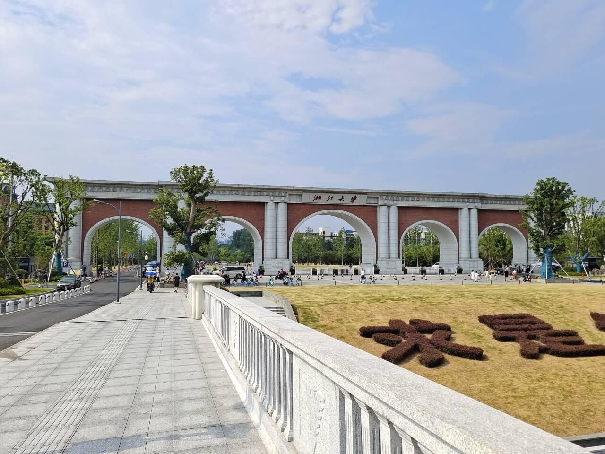
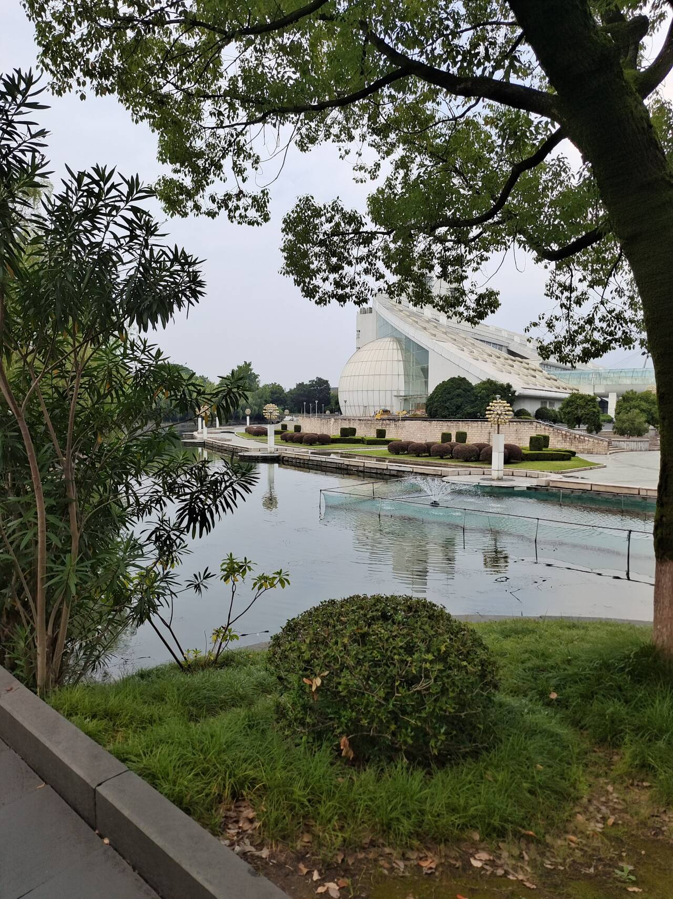
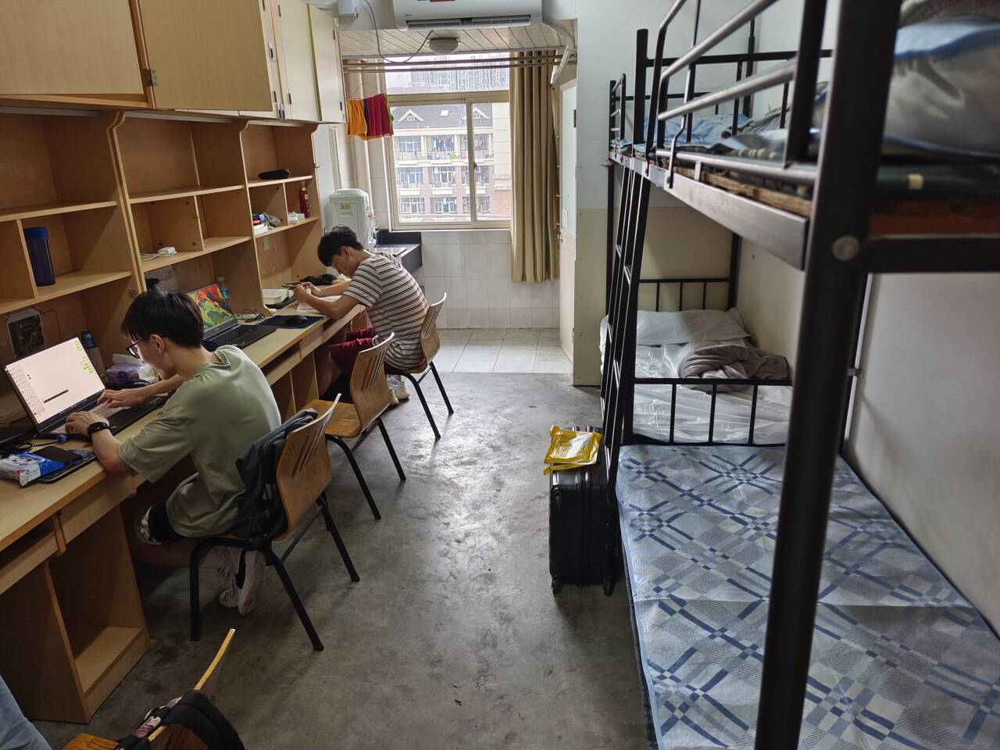
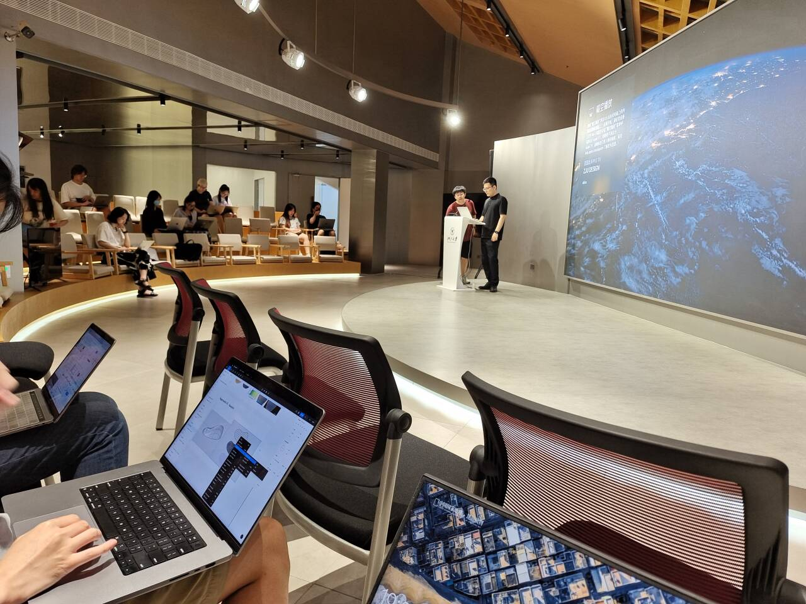
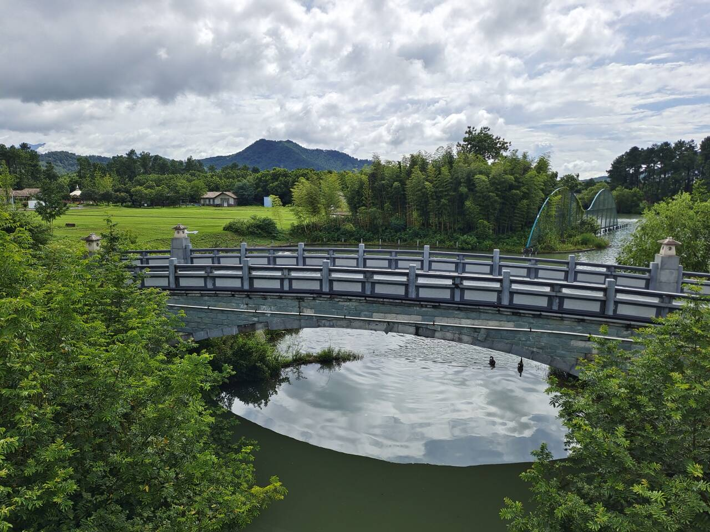
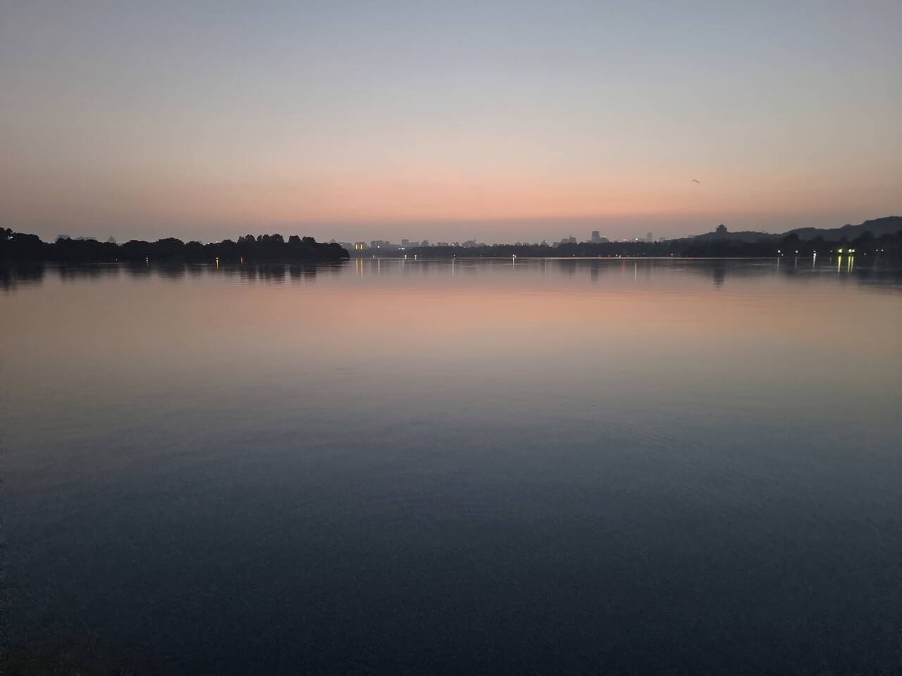
2.6 计算所、空天院等
中科院相关的研究所的夏令营时间有先有后，但因为都没怎么参与，内容很少，就放在一个合集里说了。
计算所人尽皆知的超弱com，导师话语权极大，甚至有霸面等形式的存在。我海套了大概三位研究方向我比较感兴趣的老师，可一直到报名截止，一个没搭理我，两个套路性官回T_T，于是我便不再抱有希望了。
但在我从复旦回来开摆的那几天里（7.4），一次正在跟维狗狗双排时，接到了vipl组l老师的电话面试，人傻了直接，玩个女警边打团边回答老师电话里的问题。导师表示如果我诚心想去他那里，他可以给我国科大计算机学院的名额（只是入营名额，拿offer与否还是要看夏令营发挥），跟计算所的名额相比会差一些，但我心想我这种菜鸡还强求什么呢，于是答应下来。
可后续几天我发现计算所的夏令营跟浙大实习冲突了，而此时的我还不知道浙大那边无法给到学术学位，同时感觉计算所竞争强，我这种混子去了大概率白搭，而且只能拿计算机学院名额，遂决定放弃计算所的夏令营（而且与研究所相比的话，个人会更倾向于高校）。
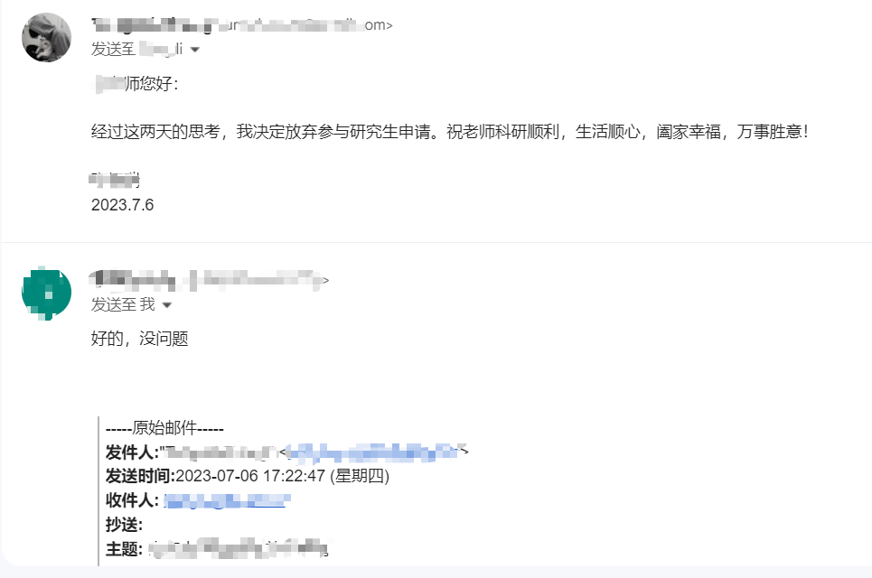
空天院其实是我报的最早的一个，因为4月份的时候我就报了他的春令营，但喜提被拒（总不能因为我在国家级荣誉那里写了国五十虞姬吧）。虽然后续没再报空天院的夏令营，但7月初的时候我收到了空天院夏令营的入营通知，大概是他们把报春令营但没过审的同学一并放进池子里面筛了。由于我此时已经有复旦offer，相比之下肯定不会去空天院，于是打算放弃，但看到一位空天院导师（Kana Nagato）在知乎的回答与文章，感觉他人蛮有趣的，而且反正线上营，就抱着多段体验的想法回复了邮件确定了参加。
可，只能说，空天院这夏令营实在是有点抽象。。。夏令营开始前一天让先竞选班长、文体委员、宣传委员、摄影师等一系列班委，然后告知大家班委会加分（我：啊？？？），关键这些班委的任务都是些干杂活的，比如班长管签到请假的，文体委员是管协助组织趣味活动的，宣委是负责总结报告的，摄影师是负责在线上会议期间截图的。。。我简直不能理解，夏令营搞这些有什么用啊，还是说空天院就需要这种干科研工作无关的杂活学生？现实一点儿的说，学生被要求干杂活这种情况在很多学校or研究所都存在，但把其纳入夏令营选拔标准之中属实有点太抽象了。当然，也不排除我个人境界太低过于愚昧从而理解不了这些工作的重要性的可能性。于是夏令营开始前一晚，我跟负责老师申请退出了，截至我退出的时候，群里已经比刚开始少了不少人了，估计原因也都差不多。
除此之外我还报了个自动化所，但不出意外的被拒力。
2.7 山大
本来想着参与沙袋夏令营体验一下，毕竟被平时给自己上课的老师面试也是一种别样的体验对吧，但没曾想你沙夏令营只宣讲不考核，还因为群里进来一堆发勤工俭学广告的天天刷屏，最后喜提“勤工俭学营”“美誉”。
3 预推免
预推免只报了个浙大计算机学院的（贼心不死），初审也过了，火车票都订好了，但去之前的前两天，我把浙大cs的所有导师都看了一遍，发现能让我愿意承担鸽了复旦老师成本的均已经明确表示过招满了(4/6)or不理我(2/6)，那我就算去了拿了offer也没用啊，又加上这时候还临时得知了一些特殊消息（不过现在看来这个特殊原因其实有点可笑），最终决定还是不去了。
4 写在最后
夏令营一大感受是，你山别的不说，比起其他学校，硬件条件真的好，四人间+独立卫浴+空间大（床之间够我们摆个桌子凑七八个人打三国杀的），还有自助厨房、不限量免费校园网（虽然网络质量有些难以恭维吧）啥的的，简直无敌能打。
然后就是对我个人来说，夏令营前期有些太顺利了，而我有点“差不多就行”的想法，的导致后期开摆了，在南期间光跟俩哥们出去玩，在浙期间也是天天下午才去工位晚上早早就润，从浙回家以后更是爽玩，预推免没准备一点儿。不过虽然相当于后面一个半月白忙，但也结识了很多优秀的同学、增长了一些见识，所以也算是满意的一段经历吧。